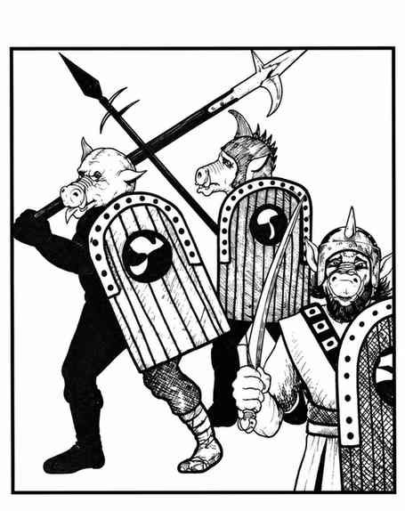

兽人 · Orc
 |
|
兽人部落竞争激烈，彼此遭遇时有 75% 的机会互相争斗，除非有足够强大的领袖（如巫师、邪恶牧师或邪领主）控制他们。强者总会恐吓并支配弱者。兽人厌恶光线，阳光下攻击骰 −1，却能在完全黑暗中凭红外视觉看清事物。
已知兽人部落包括污秽符文、血头、死月、断骨、邪眼、麻风手、腐眼和滴血刃；若某部落出现在区域内，附近其他兽人很可能也来自该部落。每遇到 30 名兽人，另有一名领袖和 3 名助手，每人 8 点生命值；若有 150 名或更多兽人，另有一名副酋长与 3–18 名卫兵（护甲等级 4、11 点生命值，按 2 骰生物战斗，每次造成 2–7 点伤害）。若兽人不在巢穴，20% 的机会正护送 1–6 辆运货车和奴隶搬运队；此时领袖与助手数量加倍，每辆车增加 10 名普通兽人，并必有一名副酋长带 5–30 名卫兵负责押运。
兽人巢穴有 75% 在地下，25% 是地上村落。巢穴中必有一名酋长和 5–30 名卫兵（护甲等级 4、13–16 点生命值，按 3 骰生物攻击，每次造成 2–8 点伤害），雌性数量等于雄性的 50%，幼体数量等于雄性数量。地下巢穴有 50% 的机会住着 2–5 名食人魔；地上村落由木屋、壕沟、土垒和木栅栏组成，有 1–4 座瞭望塔和一道大门；每 100 名雄性兽人有 1 架投石机和 1 架弩炮（按最接近的百数取整）。
兽人的典型武器配置为：剑与连枷 5%；剑与长矛 10%；斧与长矛 10%；斧与长柄武器 10%；斧与弩 10%；斧与弓 10%；剑与战斧 10%；长矛 10%；斧 10%；长柄武器 20%。领袖及以上等级者总会携带两件武器。若队伍中有副酋长，部落旗帜出现概率为 40%；酋长在场时旗帜必定存在。旗帜使 6 寸内所有兽人战斗更凶猛，生命骰和士气检定骰均获得 +1。
兽人残酷而憎恨生命，尤其痛恨精灵，会优先攻击精灵。他们捕捉奴隶用来劳作、取食或娱乐（包括折磨），但不会奴役精灵，而是立即杀死。兽人擅长挖掘隧道，35% 的机会发现地下新建或异常结构，25% 的机会发现倾斜通道；多数兽人除自己的语言与守序邪恶阵营语外，还会说地精语、大地精语和食人魔语。兽人的肤色通常是带蓝色光泽的棕色或棕绿色，鼻口与耳朵偏粉色；粗硬毛发深棕或黑色，盔甲肮脏且常带锈迹，寿命约 40 年。
半兽人 Half-Orcs。兽人几乎能与任何生物繁殖，因此存在许多带兽人血统的混种，尤其是兽人与地精、大地精或人类的混血。兽人与精灵无法杂交。半兽人通常明显偏向兽人血统，本质上就是兽人；只有约 10% 的机会能冒充其另一种血统（地精、大地精、人类等）。